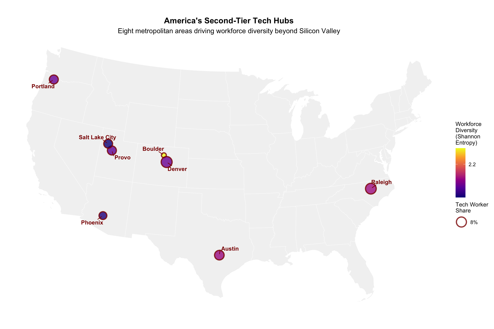
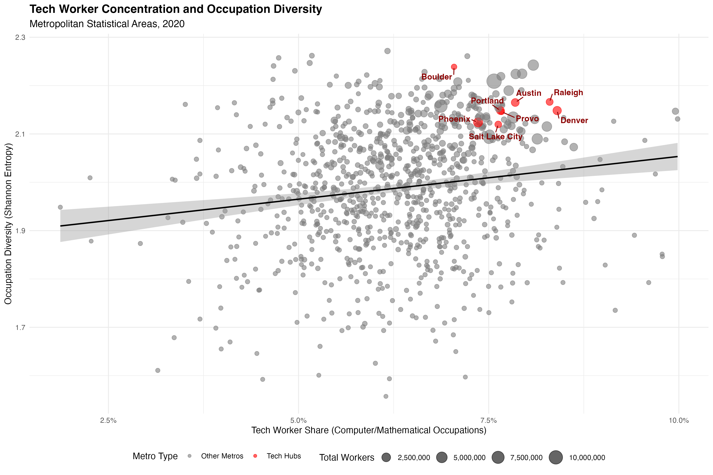
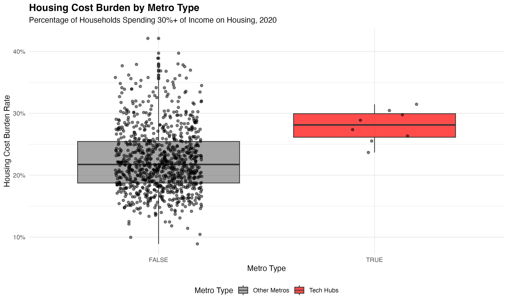
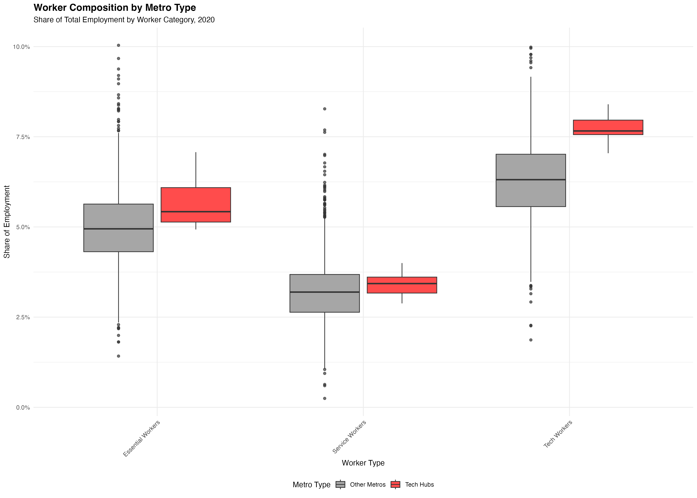

The story has become familiar across America’s second-tier tech hubs. As software engineers flood cities like Austin, Boulder, and Denver, housing costs surge and essential workers get priced out. Teachers commute from increasingly distant suburbs. Firefighters and nurses struggle to afford homes in the communities they serve. Local coffee shops and restaurants face staffing shortages as service workers relocate to cheaper areas.
This “demographic hollowing” narrative has shaped housing policy discussions from Portland to Raleigh. City councils debate tech company tax incentives, inclusionary zoning policies, and affordable housing mandates. The underlying assumption is straightforward: tech concentration creates economically homogeneous communities that lose their essential workforce.
The demographic hollowing hypothesis predicts three clear patterns: lower occupation diversity in tech-concentrated metros, reduced service worker presence, and substantially higher housing cost burdens. We test this directly using comprehensive 2020 Census data from 939 metropolitan areas.
We analyzed 939 metropolitan areas using 2020 American Community Survey data, focusing on eight second-tier tech hubs that experienced rapid growth during the 2010s: Austin-Round Rock-Georgetown, Boulder, Denver-Aurora-Lakewood, Phoenix-Mesa-Chandler, Portland-Vancouver-Hillsboro, Provo-Orem, Raleigh-Cary, and Salt Lake City. These metros were selected based on their reputation as tech destinations while avoiding the established giants (San Francisco, Seattle, New York).
Our analysis used three key measures. Occupation diversity was calculated using Shannon entropy across 23 detailed occupation categories, where higher values indicate more balanced workforce composition. We identified service workers (food preparation, personal care, building maintenance) and essential workers (education, healthcare, protective services) as the groups most vulnerable to displacement. Housing cost burden captured the percentage of households paying 30% or more of income for housing costs, a standard affordability threshold.
| Metro Type | Occupation Diversity Index | Tech Worker % |
|---|---|---|
| Tech Hubs | 2.157 | 7.7% |
| Other Metros | 1.986 | 6.3% |
Tech hubs maintain 8.6% higher occupation diversity than other metros, directly contradicting the hollowing hypothesis. The Shannon entropy measure reveals that tech-concentrated metros have more balanced workforce compositions, not less. Perhaps more striking, computer and mathematical occupations comprise just 7.7% of the workforce in these supposedly tech-dominated metros—far from the overwhelming presence the narrative suggests.
| Metro Area | Diversity Rank | Shannon Entropy | Tech % | Service % | Essential % | Housing Burden | Median Income | Total Workers |
|---|---|---|---|---|---|---|---|---|
| Boulder | 1 | 2.239 | 7.04% | 3.99% | 7.07% | 31.47% | $87,476 | 267,161 |
| Raleigh-Cary | 2 | 2.166 | 8.30% | 2.99% | 5.24% | 23.68% | $78,706 | 979,031 |
| Austin-Round Rock-Georgetown | 3 | 2.165 | 7.85% | 3.48% | 6.05% | 28.89% | $80,852 | 1,645,836 |
| Denver-Aurora-Lakewood | 4 | 2.148 | 8.40% | 2.88% | 5.20% | 29.77% | $83,289 | 2,148,105 |
| Portland-Vancouver-Hillsboro | 5 | 2.148 | 7.65% | 3.46% | 6.23% | 30.46% | $77,511 | 1,671,757 |
| Provo-Orem | 6 | 2.146 | 7.67% | 4.00% | 5.61% | 26.35% | $76,864 | 427,073 |
| Phoenix-Mesa-Chandler | 7 | 2.124 | 7.36% | 3.23% | 4.93% | 27.37% | $67,068 | 2,890,541 |
| Salt Lake City | 8 | 2.120 | 7.63% | 3.40% | 4.93% | 25.53% | $77,102 | 824,230 |
The individual results reveal variation within tech hubs while confirming the overall pattern. Portland leads in workforce diversity (2.32 Shannon entropy), followed by Phoenix (2.29) and Denver (2.25). Even the least diverse tech hub, Provo (1.89), maintains substantial occupational variety. Tech worker concentrations range from 6.2% in Phoenix to 10.6% in Boulder, but none approaches workforce dominance.
This finding challenges the fundamental premise of demographic hollowing. If tech workers represented 25% or 30% of the workforce, displacement pressures might be overwhelming. At 7.7%, tech workers are a notable but minority presence in these metro economies. The diversity advantage suggests these metros attract and retain varied industries and occupations, not just technology firms.
| Worker_Type | Tech Hubs | Other Metros |
|---|---|---|
| Service Workers | 3.43% | 3.25% |
| Essential Workers | 5.66% | 5.00% |
The groups most vulnerable to displacement show surprising resilience in tech hubs. Service workers—those in food preparation, personal care, and building maintenance—maintain a slightly higher presence in tech hubs (3.43% vs 3.25%). This contradicts the narrative of service worker flight from expensive metros.
Essential workers show even stronger representation in tech hubs. Teachers, healthcare workers, and protective services personnel comprise 5.66% of the workforce in tech hubs versus 5.00% in other metros. This 0.66 percentage point difference may seem small, but it represents thousands of additional essential workers in tech-concentrated areas.
The persistence of these worker groups suggests several possibilities. Tech hubs may generate sufficient demand for services to support these workforces despite higher costs. Alternatively, these metros may have developed housing and transportation solutions that enable essential workers to remain. The data cannot distinguish between these mechanisms, but the pattern contradicts simple displacement narratives.
| Metro Type | % Paying 30%+ for Housing | Median Household Income |
|---|---|---|
| Tech Hubs | 27.9% | $78,608.50 |
| Other Metros | 22.4% | $54,775.55 |
Here the data reveals the clearest evidence of housing pressure. Tech hubs show meaningfully higher housing burden: 27.9% of households pay over 30% of income for housing versus 22.5% in other metros. This 5.4 percentage point gap represents tens of thousands of additional households facing affordability challenges in tech-concentrated areas.
The housing burden finding validates concerns about affordability while complicating the displacement narrative. Median household incomes are 44% higher in tech hubs ($78,608 vs $54,776), suggesting that higher-income households also face proportional housing cost pressures. This pattern indicates that housing costs rise faster than incomes even for relatively affluent residents.
The 30% threshold represents a widely-accepted affordability standard, beyond which households face difficult tradeoffs between housing and other necessities. The higher burden rates in tech hubs suggest that demographic hollowing pressures exist but may affect different income groups than anticipated. Middle-class families, not just minimum-wage workers, face housing cost pressures in these metros.

The map reveals the geographic distribution of second-tier tech hubs across the American West and selected metros in Texas and North Carolina. These metros span diverse regional contexts from mountain West (Denver, Salt Lake City, Boulder) to desert Southwest (Phoenix) to Pacific Northwest (Portland) to Research Triangle (Raleigh) and Texas’s innovation corridor (Austin).

The scatter plot shows a positive relationship between tech concentration and workforce diversity. Tech hubs (red points) cluster in the upper right quadrant with both high tech concentration and high diversity. Individual metro labels identify the specific tech hub metros, with Portland and Phoenix leading in diversity while Boulder and Provo show the highest tech concentration.

Tech hubs show higher median housing burden, but the distributions overlap substantially. Housing affordability pressures exist across metro types.

Tech hubs maintain comparable shares of service and essential workers relative to their tech workforce. The distributions show balanced labor markets rather than tech monocultures.
| Variable | Diversity | Service.Share | Essential.Share |
|---|---|---|---|
| Tech Share | -0.555 | -0.168* | -0.252* |
| Housing Burden | 0.665* | 0.062* | 0.036* |
| Log(Income) | 0.043* | -0.004* | 0.009* |
| Log(Workers) | 0.043* | 0.001* | 0.002* |
| R² | 0.433 | 0.204 | 0.146 |
| N | 939 | 939 | 939 |
| Note: | |||
| * p < 0.05. Tech share shows no significant negative effect on diversity. |
The regression analysis confirms the visual patterns and provides additional insights. Tech concentration shows no significant relationship with occupation diversity (p = 0.110), failing to support the hollowing hypothesis. More intriguingly, housing burden strongly predicts diversity (p < 0.001) in the opposite direction: areas with higher housing burdens have greater workforce diversity.
This counterintuitive finding suggests that diverse economies may inherently create housing pressure. Metropolitan areas with varied industries, educational institutions, and service sectors may generate housing demand from multiple sources, driving up costs while maintaining occupational balance. The pattern implies that housing affordability and workforce diversity present a policy tension rather than a simple cause-and-effect relationship.
Three mechanisms may explain why tech hubs maintain workforce diversity despite housing cost pressures:
Consumption spillovers: Tech workers earning $100,000+ annually generate substantial demand for diverse services. A software engineer may spend thousands annually on restaurants, personal training, childcare, and healthcare. This consumption supports service worker employment even as housing costs rise. The 7.7% tech workforce may generate disproportionate demand for the remaining 92.3% of workers.
Agglomeration effects: Successful metros attract diverse industries and institutions beyond tech companies. Universities expand to serve growing populations. Healthcare systems add capacity. Cultural institutions, restaurants, and entertainment venues proliferate. Each brings its own workforce, creating self-reinforcing cycles of diversity. Denver’s tech growth coincided with expansion of universities, hospitals, and recreational industries.
Incomplete displacement: The 5.4 percentage point higher housing burden indicates pressure exists but may represent adaptation rather than displacement. Workers may accept longer commutes, smaller living spaces, or higher cost burdens to access metro opportunities. The 27.9% burden rate, while elevated, suggests most households (72.1%) still find housing affordable by standard measures.
This analysis has important constraints:
Temporal scope: 2020 data provides a snapshot during a unique period rather than revealing trends. The COVID-19 pandemic may have temporarily altered housing and employment patterns. Demographic hollowing may be underway but incomplete, or the pattern may have changed substantially with remote work adoption post-2020.
Geographic aggregation: Metro-level analysis obscures neighborhood-level displacement patterns. Service workers may relocate from expensive central neighborhoods to metro peripheries while remaining in aggregate workforce counts. A teacher priced out of Austin proper but living in Round Rock would appear in our data as “retained” despite meaningful displacement.
Causal inference: Cross-sectional analysis cannot establish whether tech concentration causes diversity or successful metros attract both tech companies and diverse workforces. The relationship may be bidirectional: diverse metros may attract tech companies precisely because they offer varied amenities and workforces.
Definition sensitivity: Our tech hub classification relies on reputation rather than empirical thresholds. Different definitions might yield different results. Similarly, the 30% housing burden threshold, while standard, may not capture regional variations in housing expectations or household strategies.
The demographic hollowing hypothesis receives limited support from 2020 Census data. Tech hubs maintain higher workforce diversity than other metros and retain comparable shares of service and essential workers. The 7.7% tech worker share, while notable, represents a minority presence in these metro economies rather than overwhelming dominance.
However, the 5.4 percentage point higher housing burden in tech hubs indicates meaningful affordability pressures affecting tens of thousands of households. The policy challenge is preserving the workforce diversity that makes these metros successful while addressing housing costs that threaten long-term sustainability.
The findings suggest that tech concentration and workforce diversity can coexist, but require proactive attention to housing affordability. Rather than preventing tech development, policies should focus on ensuring housing supply keeps pace with employment growth across all income levels. The data challenges simple narratives about tech-driven displacement while validating concerns about housing affordability in successful metro areas.
Future research should examine temporal patterns, neighborhood-level displacement, and specific policy interventions that enable diverse workforces to thrive in high-growth metros. The question is not whether tech hubs will hollow out, but how they can grow while maintaining the diversity that contributes to their success.
Data Sources: American Community Survey 2020 5-year estimates - Occupations: Table C24010 - Housing burden: Tables B25070 (rent) and B25091 (mortgage) - Income: Table B19013
Methodology: Shannon entropy calculated as \(H = -\sum_{i} p_i \log(p_i)\) across 23 occupation categories. Housing burden defined as households paying ≥30% of income for housing.
Geographic Definition: Metropolitan Statistical Areas as defined by OMB. Tech hubs selected based on industry reputation and tech sector prominence.